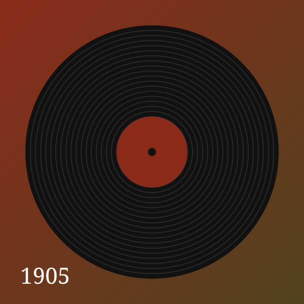

Bengal's early recorded *Bande Mataram* cluster (1905–1908)

Background: The National Institute of Science Communication / Indian Journal of History of Science article by Suvobrata Sarkar gives unusually useful recording-industry evidence. It says Hemendramohan Bose founded his phonographic business in 1905; in early 1906, at the height of anti-partition agitation, H. Bose's first batch of cylinder records was offered for sale, comprising patriotic songs sung by Rabindranath Tagore, Dwijendralal Roy and others. Bose later partnered with Pathé to transfer some cylinders to discs. One Pathé–H. Bose record has Tagore's recitation of Sonār Tarī on one side and Bande Mataram on the other; Sarkar identifies it as the oldest existing voice recording of Tagore. …